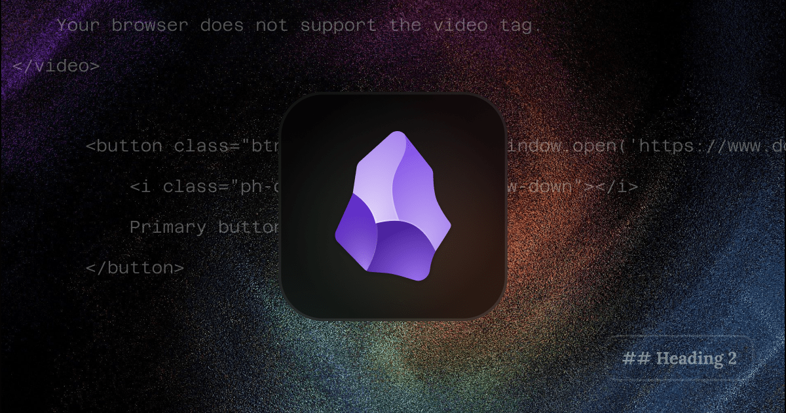

Markdown is a lightweight markup language that allows you to create well-structured content using plain text formatting. This project supports a variety of Markdown tags to help you create content that’s consistent and visually organized.
If you're using a Markdown editor like Obsidian, you can apply most tags by simply typing in plain text, then right-clicking to choose the appropriate tag.

1. Headings
Organize content with clear heading levels. Use # for different heading levels, ranging from # H1 to ###### H6.
Heading 1
Heading 2
Heading 3
Heading 4
Heading 5
Heading 6
2. Lists
Use both ordered and unordered lists.
- For ordered list, type a number, then a full stop, and then a space.
- For unordered list - also known as bullet points - type a star (
*) or a hyphen (-) or a plus (+) and then a space.
And for nested lists, just create your desired list and hit enter then tab. For eg;
- This is a bullet point, you can do the same for numbered lists.
- This is a nested bullet point
- Again nested. Just hit enter and then tab.
- This is a nested bullet point
You can style this, please refer to the post.css
3. Emphasis
Emphasize keywords or important sections of text.
- Bold: Use
**text**for bold. - Italic: Use
*text*for italic. Strikethrough: Use double tilde~~before and after a text.- Bold and italic: Use
***text***for bold and italic - Mark: Use
<mark>text</mark>for marking the text like this.` - Superscript: To create superscript text, use the
<sup>tag. eg, E = mc2 (E = mc<sup>2</sup>). You can mainly use it for giving footnotes. - Subscript: For subscript text, use the
<sub>tag. H2O (H<sub>2</sub>O) Inlince code:Usethe symbol called **backtick**for inline code, it looks like this (`)- Horizontal line: Either type
---or***
4. Blockquotes
Highlight key points or quotes including citation.
Murphy's law doesn't mean that something bad will happen. It means that whatever can happen, will happen. And that sounded just fine to us. - Cooper | Interstellar (2014)
- Use
>before a paragraph to create a blockquote. - And to add a citation, use
<cite>Citation text</cite> - You can use bibcitation a free citation generator.
5. Links
Easily add hyperlinks and reference links. The syntax is a combination of closed and open brackets.
[Link text](https://www.domain.com)
6. Buttons
Sometimes we need buttons. I have created two types of buttons. One as the default button and one as the primary button. The add on in this is, you can even add icons. Check the below code snippets.
<button onclick="window.open('https://www.domain.com', '_blank');">
Default button
</button>
See how simple it is… Just copy paste this code snippet, change the link and the button label.
Now if you wanna add an icon, first go to Phosphor icon library .
I have only called for styles such as regular, fill and duo tone, if you need the other, you can add the needed CSS calling in the head section of HTML files
Find your icon, click on it, a bottom dismissible drawer appears, click on the Web tab, copy the code and add it like this with the button code snippet
<button onclick="window.open('https://www.domain.com', '_blank');">
<i class="ph-duotone ph-cloud-arrow-down"></i>
Button with icon
</button>
Now open the icons.css in VS Code and add the icon name, to set the font size.
If you wanna add the primary button, add the following code.
<button class="btn-primary" onclick="window.open('https://www.domain.com', '_blank');">
<i class="ph-duotone ph-cloud-arrow-down"></i>
Primary button
</button>
It will add a class called btn-primary and I have already styled it in the CSS sheet. You can style this according to your liking. Also if you don't want the icon, remove that icon class.
7. Media
7.1 Images
Embed images using Markdown’s simple syntax, a combination of exclamation mark, closed and open brackets along with the option to display a text while hovering.


=128x128 you can add resolution like this as optional. if not set, it will be set to the maximum resolution of that image and limited to 100% of the div.

7.2 Video
For video use the below code snippet. Either call the video from your media library or call raw links from external libraries, which means the url ends with the video extension and if you run that url on browser, it will play a video using browser video player. Always be mindful about the size because the bandwidth may affected. Obsidian will display a video player, but might not work here, but it will on the web.
Even though it shows "posts/media/videos/video.mp4", you only need to start from media. It shows here because of a script injection.
<video controls>
<source src="media/videos/video.mp4" type="video/mp4">
Your browser does not support the video tag.
</video>
7.3 Audio
For video use the below code snippet. The same rule applies here.
<audio controls>
<source src="media/audios/audio.mp3" type="audio/mpeg">
Your browser does not support the audio element.
</audio>
8. Code snippet
For code snippets, right-click, format and select the 'Code' option. Alternatively, surround the code with triple backticks for a block code format.
If it shows in the code block, just select the affected text, Shit + Tab and bring everything to the first column and then use tab to properly indent.
code {
font-family: var(--font-family-mono);
font-size: var(--font-size-body);
font-weight: 400;
padding: 0;
margin: 0;
color: var(--obsidian-11);
line-height: 1.6;
word-wrap: break-word;
white-space: pre-wrap;
}
I have used a syntax highlighter called highlight.js.
- You can change the styles by going to the demo page and find the one that suits you
- Then go to the cdnjs page of highlight.js https://cdnjs.com/libraries/highlight.js
- Search for the theme name, copy URL and replace the old URL with the new one in the style calling of
post.html
<link rel="stylesheet" href="https://cdnjs.cloudflare.com/ajax/libs/highlight.js/11.10.0/styles/sunburst.min.css">
9. Embed
You can easily embed Bluesky posts, Tweets, YouTube videos, Spotify song and more. Just grab the code from the respective posts/tweets/videos/songs and just paste it here.
Bluesky
This is how Bluesky is decentralized. In the same way that you can switch search engines and see the same web, you can switch social apps and see the same atmosphere. It's because everybody's got their own site
— Paul Frazee's Monster (@pfrazee.com) October 21, 2024 at 2:56 AM
she can keep the DVDs https://t.co/oJsiLd8sh2
— Netflix (@netflix) October 25, 2024
YouTube
To embed a YouTube video use this iframe code snippet. You can grab the embed link source from YouTube. And copy and replace that link only here (make sure it's embed link). So that the styles will be maintained.
<iframe
class="youtube-embed"
src="https://www.youtube.com/embed/F_pInoR8Dcs"
title="YouTube video player"
frameborder="0"
allow="accelerometer; autoplay; clipboard-write; encrypted-media; gyroscope; picture-in-picture; web-share"
referrerpolicy="strict-origin-when-cross-origin"
allowfullscreen>
</iframe>
Spotify
<blockquote class="instagram-media" data-instgrm-permalink="https://www.instagram.com/p/DBrF2tLx1rN/"></blockquote> //only change this link.
<script async src="//www.instagram.com/embed.js"></script>
10. Table
To be frank, table formatting in markdowns is a little difficult. But we have Obsidian, right? So just right click > Insert > Table.
You can create great tables easily and there is also sort option which means you can build the table easily first and manage it later with features like add, move, duplicate, delete, align and sort.
Less column table
Data credits: Perplexity
| Technology | Description | Creator |
|---|---|---|
| C (1972) | Foundational general-purpose programming language | Dennis Ritchie (Bell Labs) |
| C++ (1985) | Object-oriented extension of C | Bjarne Stroustrup (Bell Labs) |
| ARPANET (1969) | First operational packet-switching network | U.S. Department of Defense |
| TCP/IP (1983) | Internet protocol suite for reliable data transfer | Vint Cerf, Bob Kahn |
| HTML 1.0 (1993) | Standardized markup language for the web | Tim Berners-Lee (W3C) |
| Java (1995) | Platform-independent, object-oriented language | James Gosling (Sun Microsystems) |
| JavaScript (1995) | Language for client-side scripting in browsers | Brendan Eich (Netscape) |
| Ruby (1995) | High-level, interpreted programming language | Yukihiro Matsumoto |
| CSS 1.0 (1996) | Styling language for HTML | Håkon Wium Lie (W3C) |
| XML 1.0 (1998) | Markup language for data storage and transport | World Wide Web Consortium (W3C) |
| RSS 0.9 (1999) | Initial version of RSS for web syndication | Ramanathan V. Guha (Netscape) |
| AJAX (2005) | Asynchronous JavaScript and XML for dynamic web pages | Jesse James Garrett (Adaptive Path) |
| Atom 1.0 (2005) | Syndication format alternative to RSS | Internet Engineering Task Force (IETF) |
| Node.js (2009) | JavaScript runtime for server-side programming | Ryan Dahl |
| React (2013) | JavaScript library for building user interfaces | Jordan Walke (Facebook) |
| HTML5 (2014) | Fifth major revision of HTML | World Wide Web Consortium (W3C) |
| Kubernetes (2014) | System for container orchestration | |
| TensorFlow (2015) | Open-source machine learning and deep learning library | |
| AI (Deep Learning) (2010s) | Advancements in deep learning and AI | Developed by various organizations globally |
A few column table
Data credits: Google
| Movie | Year | Genre | Director | Music | IMDb |
|---|---|---|---|---|---|
| The Godfather | 1972 | Drama | Francis Ford Coppola | Nino Rota | https://www.imdb.com/title/tt0068646 |
| The Dark Knight | 2008 | Action | Christopher Nolan | James Newton Howard and Hans Zimmer | https://www.imdb.com/title/tt0468569/ |
| The Descendants | 2011 | Drama | Alexander Payne | Jeff Peterson | https://www.imdb.com/title/tt1033575/ |
| Gravity | 2013 | Thriller | Alfonso Cuarón | Steven Price | https://www.imdb.com/title/tt1454468/ |
| Interstellar | 2014 | Sci-fi | Christopher Nolan | Hans Zimmer | https://www.imdb.com/title/tt0816692/ |
More than a few column table
Data credits: Meta AI
| TV Show | Year | Genre | Creator | Seasons | Episodes | Episode Length | IMDb |
|---|---|---|---|---|---|---|---|
| Friends | 1994 | Comedy | David Crane | 10 | 236 | 22 min | 8.9/10 |
| The Office (US) | 2005 | Comedy | Greg Daniels | 9 | 201 | 22 min | 8.8/10 |
| How I Met Your Mother | 2005 | Comedy | Craig Thomas | 9 | 208 | 22 min | 8.3/10 |
| The Big Bang Theory | 2007 | Comedy | Chuck Lorre | 12 | 279 | 18-22 min | 8.1/10 |
| Breaking Bad | 2008 | Drama | Vince Gilligan | 5 | 62 | 45-60 min | 9.5/10 |
| Modern Family | 2009 | Comedy | Christopher Lloyd | 11 | 250 | 22 min | 8.4/10 |
| Young Sheldon | 2017 | Comedy | Chuck Lorre | 6 | 127 | 18-22 min | 7.8/10 |